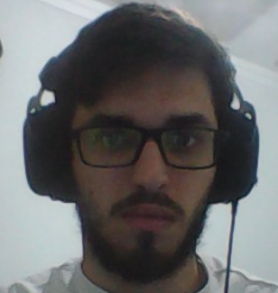

Hobbies
- Academia
- Astronomia amadora
- Jogos

email E-mail: gasoaresjank@gmail.com
link LinkedIn: linkedin.com/in/gabriel-jancoski
location_on Cornélio Procópio, Paraná
Estudante de Engenharia de Computação na UTFPR, campus Cornélio Procópio. Gosto de desenvolver soluções back-end e mobile.